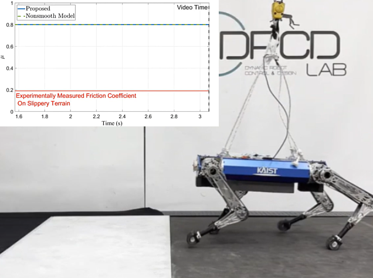
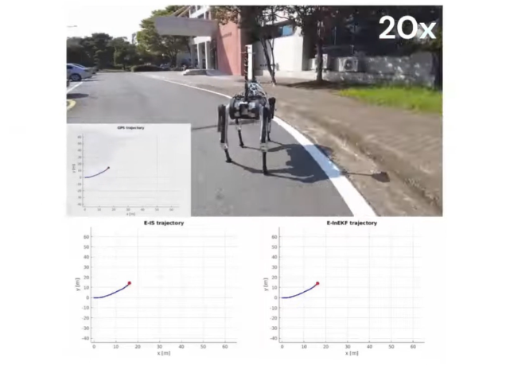
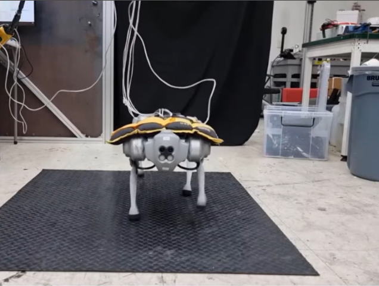
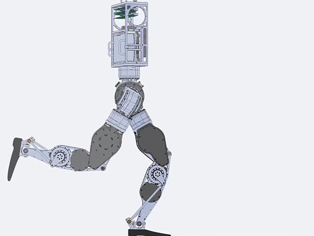
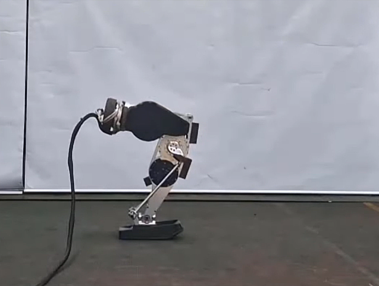

I am a fourth-year Ph.D. student in Robotics at Korea Advanced Institute of Science and Technology , advised by Dr. Hae-Won Park.
Before my Ph.D., I received my Master's degree in Mechanical Engineering from Korea Advanced Institute of Science and Technology and Bachelor's degree in Mechanical Engineering at Yonsei University.
I am a robotics researcher with a particular focus on legged robots. My current research interests include state estimation, perception, and control.
My research goal is to develop a robust and accurate multi-sensor fusion algorithm for estimating the physical state of a legged robot, enabling it to navigate diverse environments and conditions. Currently, I am working on improving model-based state estimation by leveraging the advantages of Lie groups. In addition, I am also interested in control and perception algorithms for legged robots.
Publications and Preprints
(*: equal contribution)

Online Friction Coefficient Identification for Legged Robots on Slippery Terrain Using Smoothed Contact Gradients Hajun Kim,
Dongyun Kang,
Min-Gyu Kim,
Gijeong Kim,
Hae-Won Park IEEE Robotics and Automation Letters, 2025.
video
/
arXiv
We introduce a online friction coefficient identification framework for legged robot, which addresses the uninformative gradient issues. Due to the nature of nonsmooth condition of contact dynamics, the uninformative gradient can lead to stalling at the local optima. To address this issue, this work proposes analytic smoothed gradients of contact dynamics and verifies the framework using KAIST HOUND.

Multi-Sensor Fusion for Quadruped Robot State Estimation Using Invariant Filtering and Smoothing Hajun Kim*,
Ylenia Nisticò*,
João Carlos Virgolino Soares,
Geoff Fink,
Hae-Won Park,
Claudio Semini IEEE Robotics and Automation Letters, 2025.
video
/
arXiv
We introduce a multi-sensor fusion framework for legged robot, built on the Invariant Extended Kalman Filter (InEKF) and Invariant Smoother (IS). The proposed methods, named E-InEKF and E-IS, fuses kinematics, IMU, LiDAR, and GPS data to mitigate the position drift, particularly along the z-axis, a common issue in proprioceptive-based approaches. This work derives the observation model that satisfy group-affine property to integrate the LiDAR odometry and GPS into InEKF and IS. We verify the proposed methods in indoor and outdoor experiments using KAIST HOUND2.

A modular residual learning framework to enhance model-based approach for robust locomotion
Min-Gyu Kim,
Dongyun Kang,
Hajun Kim,
Hae-Won Park IEEE Robotics and Automation Letters, 2025.
video
/
arXiv
This paper presents a novel approach that combines the advantages of both model-based and learning-based frameworks to achieve robust locomotion. The residual modules are integrated with each corresponding part of the model-based framework, a footstep planner and dynamic model designed using heuristics, to complement performance degradation caused by a model mismatch. By utilizing a modular structure and selecting the appropriate learning-based method for each residual module, our framework demonstrates improved control performance in environments with high uncertainty, while also achieving higher learning efficiency compared to baseline methods.

Design of a 3-DOF Hopping Robot with an Optimized Gearbox: An Intermediate Platform Toward Bipedal Robots
JongHun Choe,
Gijeong Kim,
Hajun Kim,
Dongyun Kang,
Min-Su Kim,
Hae-Won Park IEEE-RAS 24th International Conference on Humanoid Robots, 2025, Best Oral Paper Award video
/
arXiv
This paper presents a 3-DOF hopping robot with a human-like lower-limb joint configuration and a flat foot, capable of performing dynamic and repetitive jumping motions. To achieve both high torque output and a large hollow shaft diameter for efficient cable routing, a compact 3K compound planetary gearbox was designed using mixed-integer nonlinear programming for gear tooth optimization. To meet performance requirements within the constrained joint geometry, all major components-including the actuator, motor driver, and communication interface-were custom-designed. A reinforcement learning-based controller was employed, and robot's performance was validated through hardware experiments, demonstrating stable and repetitive hopping motions in response to user inputs.

Learning Impact-Rich Rotational Maneuvers via Centroidal Velocity Rewards and Sim-to-Real Techniques: A One-Leg Hopper Flip Case Study
Dongyun Kang,
Gijeong Kim,
JongHun Choe,
Hajun Kim,
Hae-Won Park Conference on Robot Learning, 2025.
video
/
arXiv
Dynamic rotational maneuvers, such as front flips, inherently involve large angular momentum generation and intense impact forces, presenting major challenges for reinforcement learning and sim-to-real transfer. In this work, we propose a general framework for learning and deploying impact-rich, rotation-intensive behaviors through centroidal velocity-based rewards and actuator-aware sim-to-real techniques. We identify that conventional link-level reward formulations fail to induce true whole-body rotation and introduce a centroidal angular velocity reward that accurately captures system-wide rotational dynamics. To bridge the sim-to-real gap under extreme conditions, we model motor operating regions (MOR) and apply transmission load regularization to ensure realistic torque commands and mechanical robustness.
Education
Korea Advanced Institute of Science & Technology (KAIST)
Ph.D. in Mechanical Engineering
Mar. 2022 - Present
Korea Advanced Institute of Science & Technology (KAIST)
M.S in Mechanical Engineering
Mar. 2020 - Feb. 2022
Yonsei University
B.S. in Mechanical Engineering, Ranked 1st upon graduation
Mar. 2014 - Feb. 2020
This template was borrowed from Jon Barron
Last update: Aug.2025